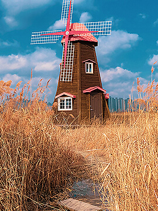

1½ CUPS RIPURAJ BIRYANI BASMATI RICE, SOAKED AND DRAINED
SALT TO TASTE
2-3 BLACK CARDAMOMS, 1 INCH CINNAMON
2-3 GREEN CARDAMOMS, 3-4 CLOVES
2 TABLESPOONS GHEE + FOR DRIZZLING
1 TABLESPOON CARAWAY SEEDS (SHAHI JEERA)
2 MEDIUM ONIONS, SLICED
1 TABLESPOON GINGER-GARLIC PASTE
¼ TEASPOON TURMERIC POWDER
2 TEASPOONS RED CHILLI POWDER
1 TEASPOON CORIANDER POWDER
1 TABLESPOON BIRYANI MASALA
¾ CUP YOGURT
½ CUP CHOPPED FRESH CORIANDER LEAVES
1 CUP BROWNED ONIONS + FOR GARNISHING
A GENEROUS PINCH OF SAFFRON, SOAKED IN WARM WATER
5-6 GREEN CHILLIES, SLIT
1 INCH GINGER, CUT INTO JULIENNES
2 TEASPOONS ROSE WATER
WHOLE WHEAT DOUGH (ATTA) TO SEAL
A FRESH MINT SPRIG FOR GARNISHING

Steps
BOIL SUFFICIENT WATER IN A DEEP NON-STICK PAN. ADD SALT,
BLACK CARDAMOMS, CINNAMON, BAY LEAF, GREEN CARDAMOMS, CLOVES
AND RIPURAJ BIRYANI BASMATI RICE, COVER AND COOK TILL THE
RICE IS FULLY DONE. STRAIN AND SET ASIDE.
HEAT GHEE IN A DEEP NON STICK PAN, ADD CARAWAY SEEDS AND
ONIONS, MIX AND SAUTÉ TILL ONIONS TURN GOLDEN.
ADD GINGER-GARLIC PASTE AND MIX. ADD TURMERIC POWDER, RED
CHILLI POWDER AND CORIANDER POWDER, MIX WELL AND SAUTÉ FOR
2-3 MINUTES.
ADD CHICKEN PIECES, SALT, BIRYANI MASALA, MIX WELL AND COOK
FOR 3-4 MINUTES. ADD YOGURT AND MIX. ADD HALF THE CHOPPED
CORIANDER, HALF THE MINT LEAVES, HALF THE BROWNED ONIONS AND
COOKED RICE. SPREAD THE RICE EVENLY.
DRIZZLE SAFFRON WATER ON TOP AND ADD GREEN CHILLIES, GINGER
JULIENNES, REMAINING BROWNED ONIONS, REMAINING CHOPPED
CORIANDER AND REMAINING MINT LEAVES. DRIZZLE SOME MORE GHEE
AND ROSE WATER AND TOP.
ROLL THE DOUGH INTO A LONG CYLINDER AND PRESS ONTO THE EDGES
OF THE PAN. PLACE THE LID ON TOP, PRESS TO SEAL AND COOK ON
LOW HEAT FOR 15-20 MINUTES.
LET IT STAND FOR 5 MINUTES. OPEN THE LID AND TRANSFER THE
BIRYANI ONTO A SERVING PLATE. SERVE HOT GARNISHED WITH
BROWNED ONIONS AND MINT SPRIG.